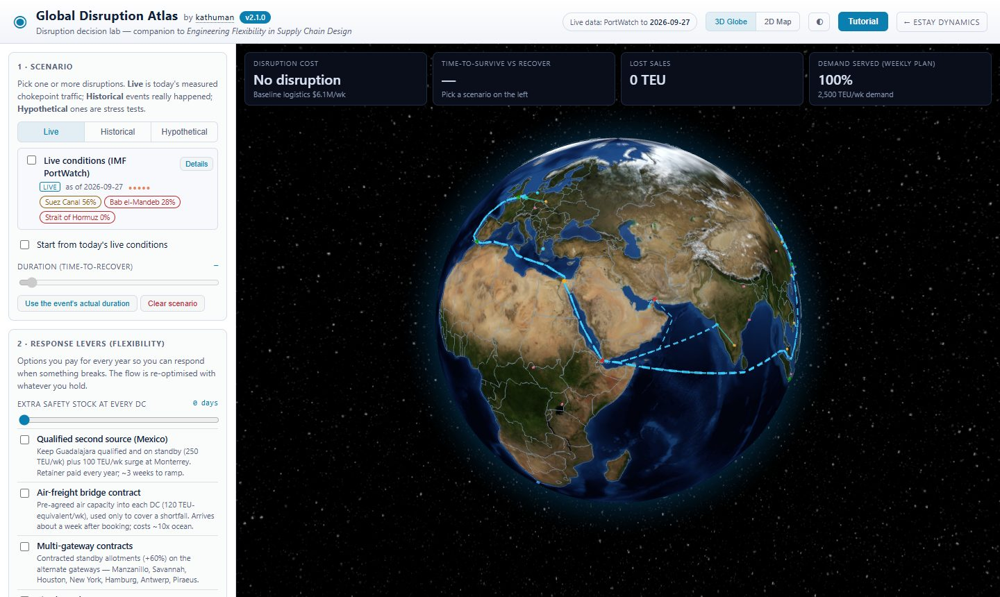
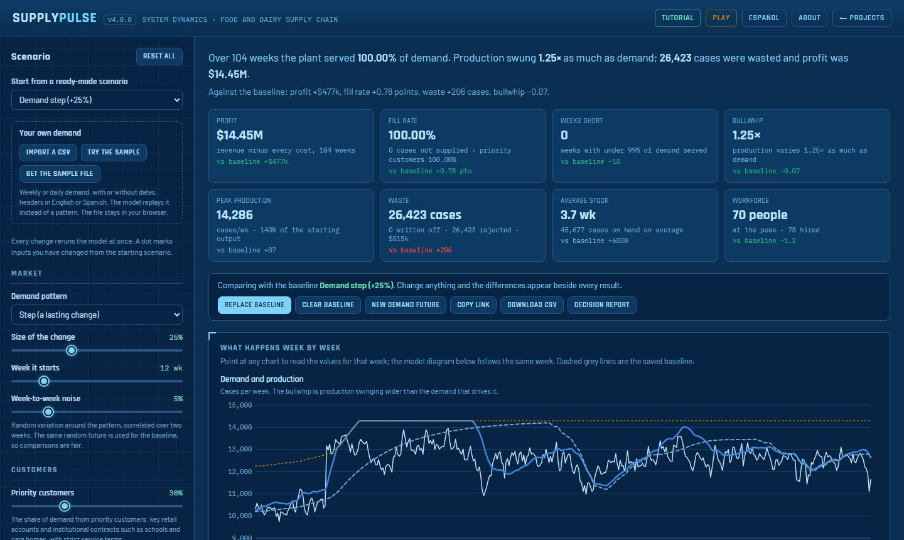
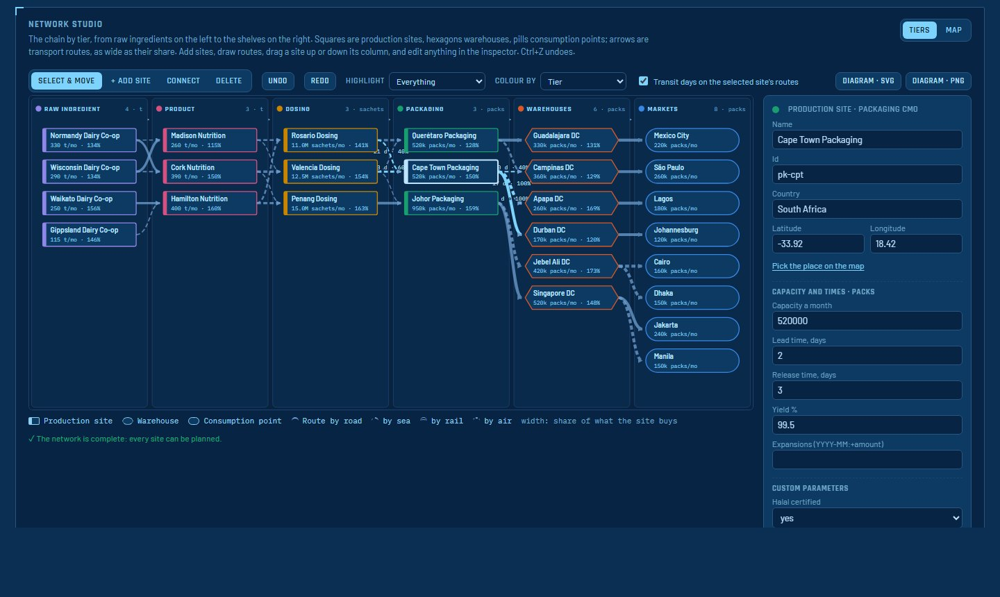
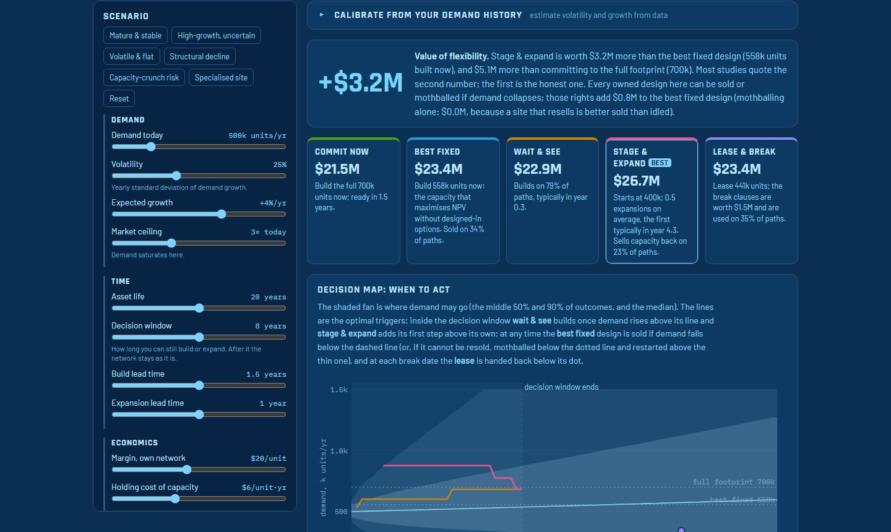

Model the system before optimising it
First find the loops and delays that produce the problem. Then decide what to change, and where.
I help you see where it breaks, what flexibility is worth buying, and which decisions to make now versus later. The analysis comes as an interactive tool your team keeps, not a slide deck.
For COOs, supply chain leaders and CFOs in mining, food and beverage, maritime and ports, and healthcare logistics.
Two loops, one dysfunction: rising orders read as rising demand (R1), while inventory adequacy quietly erodes the buffer that was supposed to control it (B1). This is the structure — not any one person's forecast error.
“We fix the same supply problem every year.”
Recurring problems come from feedback and delays, not bad luck.
See itSupply Pulse · Lag Lab
“Planning keeps calling it forecast error.”
Overshoot after a demand step is the structure of planning, not the forecast.
See itLag Lab
“We don’t know which disruption would really hurt us.”
Exposure is time-to-survive versus time-to-recover, not a risk-register score.
“We’re committing capital on one forecast.”
Flexibility has a price you can calculate. Stage, defer or lease before you commit.
“Commercial, supply and network decisions move at different speeds and collide.”
Clockspeed mismatch is a design problem, not a coordination problem.
See itClockspeed Balancing
First find the loops and delays that produce the problem. Then decide what to change, and where.
A response only counts if it beats what a competent team would have done anyway. Otherwise the gain is an illusion.
Buffers, second sources and staged capacity cost money every year. They should carry a value in the same calculation.
The model stays with your analysts. They can rerun it when the next question arrives, without calling me back.
For: COOs and supply chain leaders after a disruption, facing a problem that keeps coming back, or answering the board’s “what if X closes?”
Format: A 2-day executive workshop, with about two weeks of preparation and write-up. Fixed fee.
You leave with: A causal map the team agrees on, a ranked list of exposures, the three leverage points worth acting on, and a short decision memo.
Offer 02 / Go deeperFor: CFOs and COOs about to commit capital: a new site, a capacity expansion, a second source or contract manufacturer, or a network redesign.
Format: 8–12 weeks. Fixed fee per phase.
You leave with: The option set with a value on each option, a staged plan with clear decision triggers, a board-ready investment memo, and the model itself.
Offer 03 / Keep the capabilityFor: Heads of supply chain strategy and planning who want the capability in-house, not another report.
Format: 6–10 weeks to build, then three months of fixed support.
You leave with: A working, validated tool with its code, a validation report, documentation and a team that can use it. Optional annual model review.
Most engagements start with the Diagnostic. I work with organisations in mining, food and beverage, maritime and ports, and healthcare logistics.

If a strait or a major port closes, which of our sites run out first, and what does each response cost?
It shows which buffers, second sources or air bridges are worth funding, by comparing each site’s time-to-survive with its time-to-recover.

Why does a demand peak or a plant stoppage turn into empty shelves, then written-off stock?
It tells you whether overtime, faster quality release or a different planning policy actually pays, measured against a fair baseline.

Which site in our multi-tier chain runs out of capacity first, and when must we add more?
It sizes the capacity to add, site by site and year by year, and shows how much demand is served if you add nothing.

Should we build full scale now, build smaller and expand, wait, or lease?
It puts a value on each option against the best fixed design, and gives the demand levels that should trigger the next decision.
The examples run on illustrative data, mostly from food and dairy. The methods transfer to other sectors.
PhD, Technical University of Denmark · MSc, MIT · Council member, System Dynamics Society · Published in the Journal of Simulation, the NATO Science Series and Computers & Security · Past sector experience in mining, beverage distribution, healthcare and pharmaceutical manufacturing · Copenhagen
Technical depth → Validation and test suites, methods, research, the full tool portfolio and the lab.